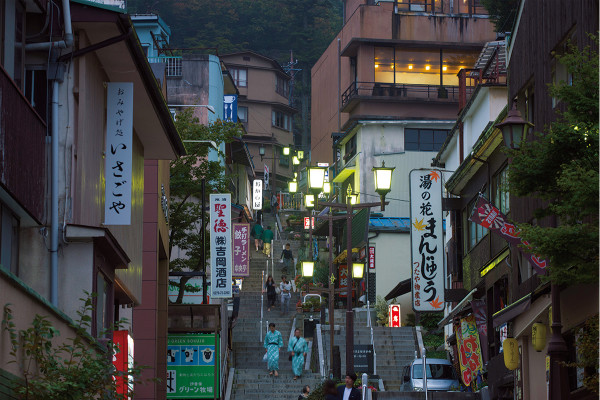
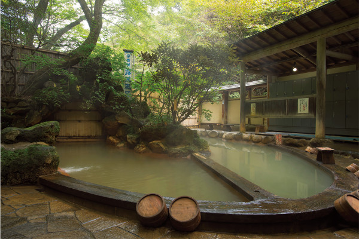
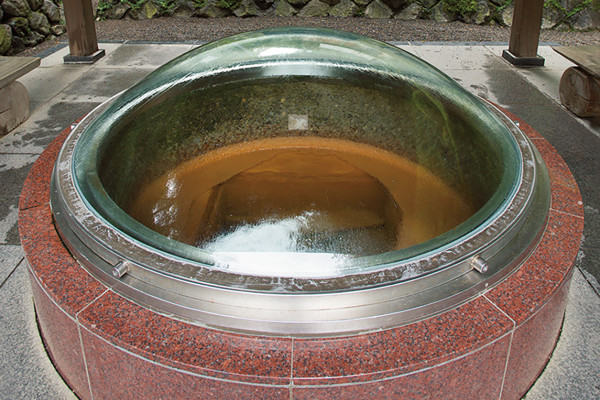
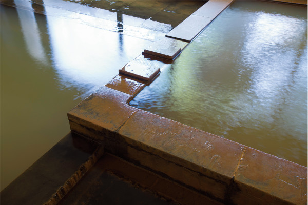
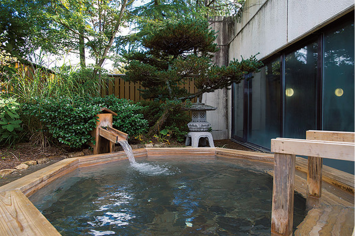
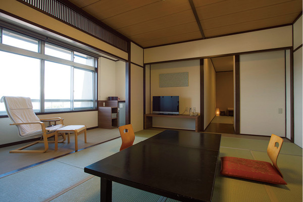
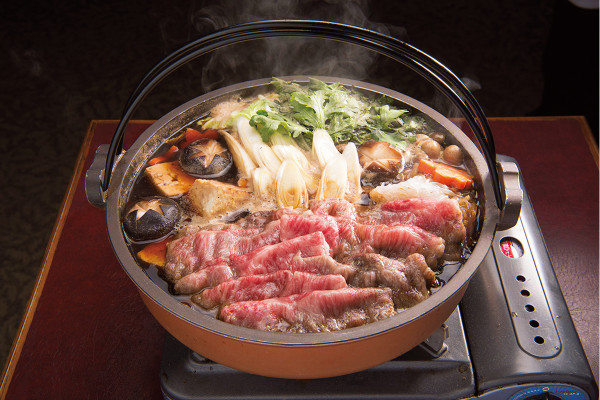

Префектура Гумма · Икахо · онсэн
Онсэн Икахо: «золотой источник», который любили писатели и поэты

Онсэн Икахо начинался как лечебница для раненых воинов, а через несколько веков стал любимым курортом японских писателей. Объяснение у всех одно: мягкая бурая вода «золотого источника».
Место
Курорт писателей
Онсэн Икахо лежит на склоне горы Харуна, на высоте около 700 метров. Здесь бьют два вида источников: бурый «Коганэ-но ю», «золотой источник», и прозрачный «Сироганэ-но ю», «серебряный». Лицо Икахо это «золотой источник»: вода у него мягкая, и за века она вылечила и успокоила множество гостей.
Со второй половины XIX века до 1930-х годов в Икахо ездили писатели, поэты и художники. Среди них был Сосэки Нацумэ (1867–1916), классик японской прозы, автор романов «Ваш покорный слуга кот» и «Мальчуган». Приезжали поэт Бунмэй Цутия (1890–1990), мастер танка, и поэтесса Акико Ёсано (1878–1942), одна из самых известных авторов танка своего времени. Городок с его особым настроением часто появлялся в романах и фильмах.
Больше всех Икахо любили двое. Рока Токутоми (1868–1927), писатель, чей роман «Хототогису» вышел в 1898–1899 годах, сделал Икахо местом действия этой книги. Второй это Юмэдзи Такэхиса (1884–1934), художник и поэт, известный портретами красавиц. Рока Токутоми написал об Икахо так:
«Вода хороша, гостиницы хороши, вид хорош. Я совсем влюбился в Икахо»
Рока Токутоми, роман «Хототогису»
Курорт, который любило столько людей искусства, оставил заметный след и в японской культуре.
Вода
«Золотой источник»

«Коганэ-но ю» бьёт в Икахо с давних времён, и узнать его легко по бурому цвету. Температура источника около 42 °C. Вода идёт через «кома-гути», распределительные отводы источника, и по ним попадает в гостиницы.

Вода чуть густая на ощупь, мягкая и почти не раздражает кожу. Считается, что она помогает при невралгии, мышечной боли и болях в суставах и ускоряет заживление ран, поэтому сюда веками приезжали лечиться и отдыхать. Она прогревает тело до самой глубины и разгоняет кровь, так что тем, кто постоянно мёрзнет, Икахо особенно подойдёт.
История
От госпиталя к курортному городку
Икахо родился как место лечения раненых, и своей известностью он обязан войнам XVI века. В 1575 году Кацуёри Такэда (1546–1582), полководец и глава клана Такэда, проиграл битву при Нагасино, и раненых у него оказалось множество. Чтобы их вылечить, он приказал Масаюки Санаде (1547–1611), своему вассалу, позже знаменитому полководцу, устроить здесь купальни для лечения. Получается, что Икахо был в каком-то смысле госпиталем своего времени.
Потом, с XVII века до наших дней, городок не раз горел, но каждый раз отстраивался и оставался любимым онсэном для множества людей.
Рёкан
«Цукагосия Ситибээ»: с 1863 года
Право на «кома-гути» получили двенадцать семей, и они открыли гостиницы, где лечили раненых воинов. Одна из этих гостиниц, «Цукагосия Ситибээ», открылась в 1863 году на улице каменной лестницы, а в 1963 году переехала на нынешнее место. В здании сохранились многие старые детали, а также материалы о тех временах, когда гостиница стояла на лестнице.

Вода здесь, конечно, «Коганэ-но ю», и она течёт прямо из источника, без повторного использования. За источником внимательно следят, поэтому гостям достаётся на сто процентов природная вода.

Открытая купальня из японского кипариса стоит в саду при большой купальне «Хототогису-но ю». Вода в ней тоже идёт прямо из источника, а таких купален в Икахо немного. В большой купальне дальняя часть горячее, ближняя прохладнее. Чтобы не перегреться, начинать лучше с прохладной воды.


«Цукагосия Ситибээ»
- Адрес
- префектура Гумма, Сибукава, Икахо-мати, Икахо, 175-1
- Телефон
- +81 279-72-3311
- Номера
- 46
- Цены / Вход
- от 10 000 иен
- Сайт
- tsukagoshiya.jp
Писатели любили Икахо за мягкую воду, которая лечит и тело, и душу, и за улочки городка с их особым настроением. Посмотреть, что привлекало сюда Сосэки Нацумэ, Року Токутоми и Юмэдзи Такэхису, можно и сегодня. О другом рёкане Икахо, «Коункане», где смешались японский и западный стиль, рассказывает отдельная статья.
Фото: Ясуфуми Судзуки.